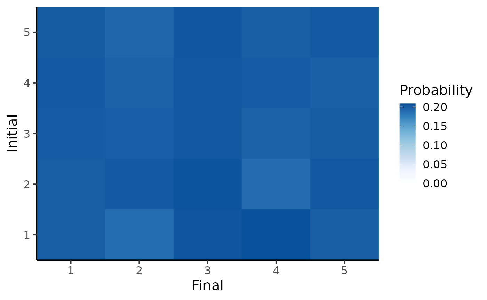
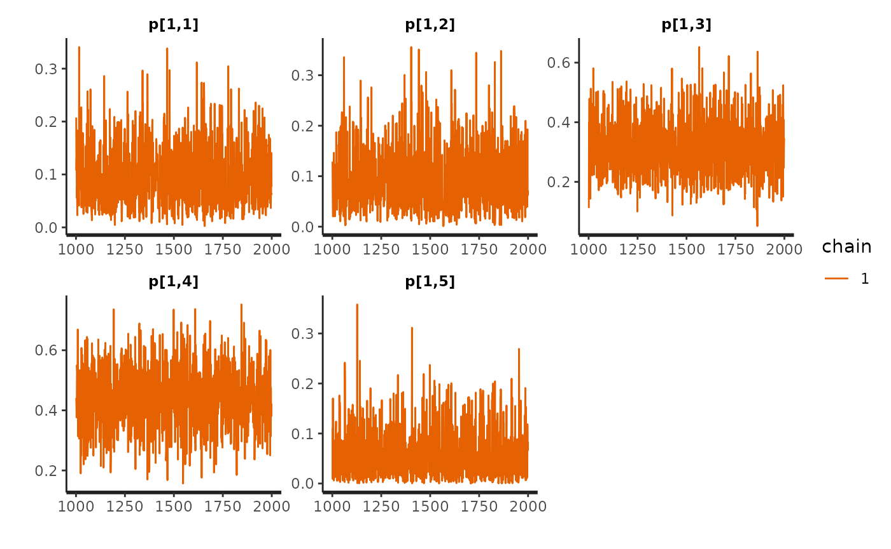

Markov Chain model
MC.RmdIn this example, we will consider a Markov Chain with K = 5 states and generate a time-series of length t_max = 200.
library(EczemaPred)
library(HuraultMisc)
library(dplyr)
library(tidyr)
library(ggplot2)
library(rstan)
options(mc.cores = parallel::detectCores()) # Parallel computing
set.seed(2021) # For reproducibility
model <- EczemaModel("MC", K = params$K)Prior predictive distribution
The Stan model works with pairs of successive states rather than a time-series sequence. To generate a time-series from the prior predictive distribution, we can consider that all possible states at each time-point.
df0 <- data.frame(y0 = rep(1:params$K, each = params$t_max),
y1 = 1, # does not matter
dt = 1)
fit_prior1 <- sample_prior(model, data = df0, chains = 1, refresh = 0)The default prior that we used was a symmetric uniform Dirichlet distribution (Dirichlet distribution where all concentration parameters are equal to 1). We can inspect the empirical distribution of the transition probabilities.
rstan::plot(fit_prior1, pars = "p", plotfun = "hist")
We can also plot the expected transition matrix as an heatmap.
plot_transition_MC(fit_prior1)
If the categories are ordinal, we may assume that the probabilities of transitioning from state 5 to 1 is much smaller than the probability from transitioning from state 5 to 4. In that case, we could use an RBF-like Dirichlet prior for the transition probabilities, for example:
prior_RBF_MC <- function(K, alpha, l) {
# RBF-like Dirichlet prior
# Each transition pmf is normalised to a pseudo-count of K
#
# Args:
# K : number of states
# alpha: scaling factor, determining the concentration of the Dirichlet distribution
# l: length scale
#
# Returns:
# K*K matrix
p <- matrix(NA, nrow = K, ncol = K)
for (i in 1:K) {
for (j in 1:K) {
p[i, j] <- exp(-(i - j)^2 / 2 / l^2)
}
p[i, ] <- p[i, ] / sum(p[i, ])
}
p <- alpha * K * p
return(list(p = p))
}
model2 <- EczemaModel("MC", K = params$K, prior = prior_RBF_MC(params$K, 1, 1))
fit_prior2 <- sample_prior(model2, data = df0, chains = 1, refresh = 0)
#> Warning: There were 863 divergent transitions after warmup. See
#> https://mc-stan.org/misc/warnings.html#divergent-transitions-after-warmup
#> to find out why this is a problem and how to eliminate them.
#> Warning: Examine the pairs() plot to diagnose sampling problems
#> Warning: Bulk Effective Samples Size (ESS) is too low, indicating posterior means and medians may be unreliable.
#> Running the chains for more iterations may help. See
#> https://mc-stan.org/misc/warnings.html#bulk-ess
#> Warning: Tail Effective Samples Size (ESS) is too low, indicating posterior variances and tail quantiles may be unreliable.
#> Running the chains for more iterations may help. See
#> https://mc-stan.org/misc/warnings.html#tail-ess
plot_transition_MC(fit_prior2)
This prior as the same information value (same number of pseudo-count) as the prior above, but favours neighbouring transitions.
Generating fake data
In the following, we will consider the uniform Dirichlet prior. We can generate a sequence by taking a draw in the sample prior predictive distribution and assuming an initial state with the following
draw <- 501
initial <- 2
yrep <- rstan::extract(fit_prior1, pars = "y_rep")[[1]]
yrep1 <- matrix(yrep[draw, ], ncol = params$t_max, byrow = TRUE)
# Assemble sequence
out <- rep(NA, params$t_max)
out[1] <- initial
for (i in 1:(params$t_max - 1)) {
out[i + 1] = yrep1[out[i], i]
}
df <- data.frame(t = 1:params$t_max, y = out)The parameters used to generate this sequence can be extracted with:
true_param <- rstan::extract(fit_prior1, pars = "p") %>%
HuraultMisc::extract_draws(draw)In practice, some values are often missing. We can generate missing values with the following:
t_mis <- which(generate_missing(params$t_max, type = "random", p_mis = 0.2))
df %>%
mutate(y = replace(y, t %in% t_mis, NA)) %>%
ggplot(aes(x = t, y = y)) +
geom_point() +
geom_path() +
theme_bw(base_size = 15)
Fake data check
Using this fake dataset, we can fit the model and try to recover the transition probabilities. We can also hold out some observations to evaluate the performance of the model.
df_MC <- df %>%
rename(y0 = y) %>%
mutate(y1 = lead(y0),
dt = lead(t) - t) %>%
drop_na()
train <- df_MC %>% filter(t <= 0.9 * params$t_max)
test <- df_MC %>% filter(t > 0.9 * params$t_max)
fit <- EczemaFit(model,
train = train,
test = test,
chains = 1,
refresh = 0)Diagnostics
First, we look for evidence of an absence of convergences by inspecting divergences and trace plots.
check_hmc_diagnostics(fit)
#>
#> Divergences:
#>
#> Tree depth:
#>
#> Energy:
pairs(fit, pars = paste0("p[1,", 1:params$K, "]")) # transitions probabilities from state 1

Posterior estimates
Then, we visualise posterior estimates and compare them to their prior.
par0 <- HuraultMisc::summary_statistics(fit_prior1, pars = "p")
par <- HuraultMisc::summary_statistics(fit, pars = "p")
HuraultMisc::plot_prior_posterior(par0, par, pars = "p", match_exact = FALSE)
We can also quantify the influence of the prior on the posterior estimates by computing the posterior shrinkage and Mahalanobis distance between the mean posterior and the prior. The posterior shrinkage roughly quantifies how much the model is learning, and is defined for a parameter \(\theta\) as \(1 - \frac{\operatorname{Var}(\theta_\text{post})}{\operatorname{Var}(\theta_\text{prior}}\). The distance between the prior and posterior can be used to assess whether the prior is informative or not, where a distance greater than 2 or 3 could be interpreted as a posterior that is not “included” in the prior.
HuraultMisc::plot_prior_influence(par0, par, pars = "p", match_exact = FALSE)
We also visualise the expected transition matrix:
plot_transition_MC(fit)
Can we recover the true parameters?
We plot posterior estimates alongside the true parameters values that was used to generate the data.
HuraultMisc::summary_statistics(fit, "p") %>%
full_join(true_param, by = c("Variable" = "Parameter", "Index")) %>%
rename(True = Value) %>%
ggplot(aes(x = Variable)) +
geom_pointrange(aes(y = Mean, ymin = `5%`, ymax = `95%`, colour = "Posterior")) +
geom_point(aes(y = True, colour = "Truth"), size = 2) +
coord_flip(ylim = c(0, 1)) +
scale_colour_manual(values = c("Posterior" = "black", "Truth" = "#E69F00")) +
labs(x = "", y = "Estimate", colour = "") +
theme_bw(base_size = 20) +
theme(legend.position = "top")
We can also quantify the “accuracy” of posterior estimates by computing the coverage probability of the parameters in the model, that is the proportion of parameters for which the x% credible interval includes the true value. For instance, we would expect that approximately 50% of the parameters have their 50% credible interval including the true value.
HuraultMisc::plot_coverage(do.call(cbind, rstan::extract(fit, pars = true_param[["Parameter"]])),
true_param[["Value"]])
Performance
Finally, we can compute the lpd and RPS for each observation in the test set, which metrics could later be compared to those of another model.
test <- test %>%
mutate(lpd = extract_lpd(fit),
RPS = extract_RPS(fit))
test %>%
pivot_longer(cols = c("lpd", "RPS"), names_to = "Metric", values_to = "Value") %>%
group_by(Metric) %>%
summarise(Mean = mean(Value), SD = sd(Value), SE = SD / sqrt(n()))
#> # A tibble: 2 × 4
#> Metric Mean SD SE
#> <chr> <dbl> <dbl> <dbl>
#> 1 lpd -1.53 0.634 0.158
#> 2 RPS 0.175 0.101 0.0253